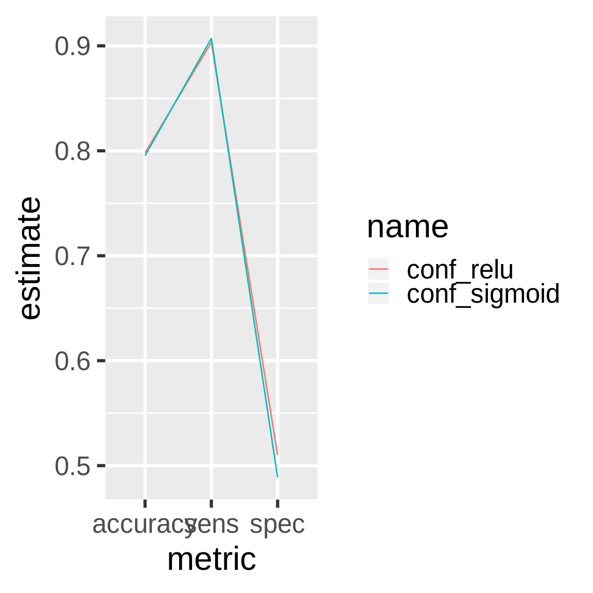

Chapter 9 Customer churn and deep learning
drake is designed for workflows with long runtimes, and a major use case is deep learning. This chapter demonstrates how to leverage drake to manage a deep learning workflow. The original example comes from a blog post by Matt Dancho, and the chapter’s content itself comes directly from this R notebook, part of an RStudio Solutions Engineering example demonstrating TensorFlow in R. The notebook is modified and redistributed under the terms of the Apache 2.0 license, copyright RStudio (details here).
9.1 Packages
First, we load our packages into a fresh R session.
9.2 Functions
drake is R-focused and function-oriented. We create functions to preprocess the data,
prepare_recipe <- function(data) {
data %>%
training() %>%
recipe(Churn ~ .) %>%
step_rm(customerID) %>%
step_naomit(all_outcomes(), all_predictors()) %>%
step_discretize(tenure, options = list(cuts = 6)) %>%
step_log(TotalCharges) %>%
step_mutate(Churn = ifelse(Churn == "Yes", 1, 0)) %>%
step_dummy(all_nominal(), -all_outcomes()) %>%
step_center(all_predictors(), -all_outcomes()) %>%
step_scale(all_predictors(), -all_outcomes()) %>%
prep()
}define a keras model, exposing arguments to set the dimensionality and activation functions of the layers,
define_model <- function(rec, units1, units2, act1, act2, act3) {
input_shape <- ncol(
juice(rec, all_predictors(), composition = "matrix")
)
keras_model_sequential() %>%
layer_dense(
units = units1,
kernel_initializer = "uniform",
activation = act1,
input_shape = input_shape
) %>%
layer_dropout(rate = 0.1) %>%
layer_dense(
units = units2,
kernel_initializer = "uniform",
activation = act2
) %>%
layer_dropout(rate = 0.1) %>%
layer_dense(
units = 1,
kernel_initializer = "uniform",
activation = act3
)
}train a model,
train_model <- function(
rec,
units1 = 16,
units2 = 16,
act1 = "relu",
act2 = "relu",
act3 = "sigmoid"
) {
model <- define_model(
rec = rec,
units1 = units1,
units2 = units2,
act1 = act1,
act2 = act2,
act3 = act3
)
compile(
model,
optimizer = "adam",
loss = "binary_crossentropy",
metrics = c("accuracy")
)
x_train_tbl <- juice(
rec,
all_predictors(),
composition = "matrix"
)
y_train_vec <- juice(rec, all_outcomes()) %>%
pull()
fit(
object = model,
x = x_train_tbl,
y = y_train_vec,
batch_size = 32,
epochs = 32,
validation_split = 0.3,
verbose = 0
)
model
}compare predictions against reality,
confusion_matrix <- function(data, rec, model) {
testing_data <- bake(rec, testing(data))
x_test_tbl <- testing_data %>%
select(-Churn) %>%
as.matrix()
y_test_vec <- testing_data %>%
select(Churn) %>%
pull()
yhat_keras_class_vec <- model %>%
predict_classes(x_test_tbl) %>%
as.factor() %>%
fct_recode(yes = "1", no = "0")
yhat_keras_prob_vec <-
model %>%
predict_proba(x_test_tbl) %>%
as.vector()
test_truth <- y_test_vec %>%
as.factor() %>%
fct_recode(yes = "1", no = "0")
estimates_keras_tbl <- tibble(
truth = test_truth,
estimate = yhat_keras_class_vec,
class_prob = yhat_keras_prob_vec
)
estimates_keras_tbl %>%
conf_mat(truth, estimate)
}and compare the performance of multiple models.
compare_models <- function(...) {
name <- match.call()[-1] %>%
as.character()
df <- map_df(list(...), summary) %>%
filter(.metric %in% c("accuracy", "sens", "spec")) %>%
mutate(name = rep(name, each = n() / length(name))) %>%
rename(metric = .metric, estimate = .estimate)
ggplot(df) +
geom_line(aes(x = metric, y = estimate, color = name, group = name)) +
theme_gray(24)
}9.3 Plan
Next, we define our workflow in a drake plan. We will prepare the data, train different models with different activation functions, and compare the models in terms of performance.
activations <- c("relu", "sigmoid")
plan <- drake_plan(
data = read_csv(file_in("customer_churn.csv"), col_types = cols()) %>%
initial_split(prop = 0.3),
rec = prepare_recipe(data),
model = target(
train_model(rec, act1 = act),
format = "keras", # Supported in drake > 7.5.2 to store models properly.
transform = map(act = !!activations)
),
conf = target(
confusion_matrix(data, rec, model),
transform = map(model, .id = act)
),
metrics = target(
compare_models(conf),
transform = combine(conf)
)
)The plan is a data frame with the steps we are going to do.
plan
#> # A tibble: 7 x 3
#> target command format
#> <chr> <expr> <chr>
#> 1 data read_csv(file_in("customer_churn.csv"), col_types = c… <NA>
#> 2 rec prepare_recipe(data) … <NA>
#> 3 model_relu train_model(rec, act1 = "relu") … keras
#> 4 model_sigm… train_model(rec, act1 = "sigmoid") … keras
#> 5 conf_relu confusion_matrix(data, rec, model_relu) … <NA>
#> 6 conf_sigmo… confusion_matrix(data, rec, model_sigmoid) … <NA>
#> 7 metrics compare_models(conf_relu, conf_sigmoid) … <NA>9.4 Dependency graph
The graph visualizes the dependency relationships among the steps of the workflow.
9.5 Run the models
Call make() to actually run the workflow.
9.6 Inspect the results
The two models performed about the same.

9.7 Add models
Let’s try the softmax activation function.
activations <- c("relu", "sigmoid", "softmax")
plan <- drake_plan(
data = read_csv(file_in("customer_churn.csv"), col_types = cols()) %>%
initial_split(prop = 0.3),
rec = prepare_recipe(data),
model = target(
train_model(rec, act1 = act),
format = "keras", # Supported in drake > 7.5.2 to store models properly.
transform = map(act = !!activations)
),
conf = target(
confusion_matrix(data, rec, model),
transform = map(model, .id = act)
),
metrics = target(
compare_models(conf),
transform = combine(conf)
)
)make() skips the relu and sigmoid models because they are already up to date. (Their dependencies did not change.) Only the softmax model needs to run.
9.9 Update your code
If you change upstream functions, even nested ones, drake automatically refits the affected models. Let’s increase dropout in both layers.
define_model <- function(rec, units1, units2, act1, act2, act3) {
input_shape <- ncol(
juice(rec, all_predictors(), composition = "matrix")
)
keras_model_sequential() %>%
layer_dense(
units = units1,
kernel_initializer = "uniform",
activation = act1,
input_shape = input_shape
) %>%
layer_dropout(rate = 0.15) %>% # Changed from 0.1 to 0.15.
layer_dense(
units = units2,
kernel_initializer = "uniform",
activation = act2
) %>%
layer_dropout(rate = 0.15) %>% # Changed from 0.1 to 0.15.
layer_dense(
units = 1,
kernel_initializer = "uniform",
activation = act3
)
}All the models and downstream results are affected.
9.10 History and provenance
drake version 7.5.0 and above tracks history and provenance. You can see which models you ran, when you ran them, how long they took, and which settings you tried (i.e. named arguments to function calls in your commands).
history <- drake_history()
history
#> # A tibble: 17 x 10
#> target current built exists hash command seed runtime prop act1
#> <chr> <lgl> <chr> <lgl> <chr> <chr> <int> <dbl> <dbl> <chr>
#> 1 conf_r… FALSE 2019-… TRUE 562f… confusio… 4.05e8 0.802 NA <NA>
#> 2 conf_r… TRUE 2019-… TRUE 45d7… confusio… 4.05e8 0.488 NA <NA>
#> 3 conf_s… FALSE 2019-… TRUE 49cd… confusio… 1.93e9 0.602 NA <NA>
#> 4 conf_s… TRUE 2019-… TRUE f22d… confusio… 1.93e9 0.463 NA <NA>
#> 5 conf_s… FALSE 2019-… TRUE 48eb… confusio… 1.80e9 0.811 NA <NA>
#> 6 conf_s… TRUE 2019-… TRUE 4c29… confusio… 1.80e9 0.485 NA <NA>
#> 7 data TRUE 2019-… TRUE ca84… "read_cs… 1.29e9 0.114 0.3 <NA>
#> 8 metrics FALSE 2019-… TRUE 304a… compare_… 1.21e9 0.0280 NA <NA>
#> 9 metrics FALSE 2019-… TRUE 8652… compare_… 1.21e9 0.041 NA <NA>
#> 10 metrics TRUE 2019-… TRUE d7be… compare_… 1.21e9 0.0310 NA <NA>
#> 11 model_… FALSE 2019-… TRUE efdd… "train_m… 1.47e9 5.82 NA relu
#> 12 model_… TRUE 2019-… TRUE 79e8… "train_m… 1.47e9 5.72 NA relu
#> 13 model_… FALSE 2019-… TRUE 5efd… "train_m… 1.26e9 7.93 NA sigm…
#> 14 model_… TRUE 2019-… TRUE 7d87… "train_m… 1.26e9 5.63 NA sigm…
#> 15 model_… FALSE 2019-… TRUE d2c9… "train_m… 8.05e8 5.71 NA soft…
#> 16 model_… TRUE 2019-… TRUE 0054… "train_m… 8.05e8 5.88 NA soft…
#> 17 rec TRUE 2019-… TRUE eae9… prepare_… 6.29e8 0.195 NA <NA>And as long as you did not run clean(garbage_collection = TRUE), you can get the old data back. Let’s find the oldest run of the relu model.
hash <- history %>%
filter(act1 == "relu") %>%
pull(hash) %>%
head(n = 1)
drake_cache()$get_value(hash)
#> Model
#> Model: "sequential_1"
#> ___________________________________________________________________________
#> Layer (type) Output Shape Param #
#> ===========================================================================
#> dense_3 (Dense) (None, 16) 576
#> ___________________________________________________________________________
#> dropout_2 (Dropout) (None, 16) 0
#> ___________________________________________________________________________
#> dense_4 (Dense) (None, 16) 272
#> ___________________________________________________________________________
#> dropout_3 (Dropout) (None, 16) 0
#> ___________________________________________________________________________
#> dense_5 (Dense) (None, 1) 17
#> ===========================================================================
#> Total params: 865
#> Trainable params: 865
#> Non-trainable params: 0
#> ___________________________________________________________________________